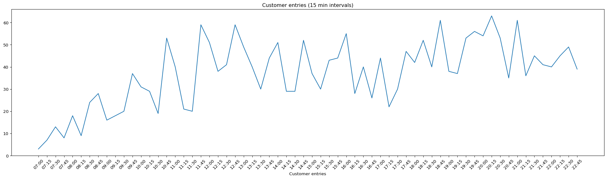

import polars as pl
import numpy as np
import matplotlib.pyplot as plt
import matplotlib.dates as mdates
from datetime import datetimeVerifying Little’s Law Using and Inventory Build Up Diagram of UCSD’s Rogers Market
Introduction
Data Set:
This is transaction-level data from Rogers Market with Amazon Just Walk Out technology on Feb. 28, 2024.
Problem:
“On average, how many customers are in Rogers Market at any given time based on how many come in every hour and how long they stay in the store?”
Solution:
We are going to verify Little’s Law:
\[L = \lambda W\]
Where:
- \(L\) = Average number of items in the system
- \(\lambda\) = Average arrival rate
- \(W\) = Average time an item spends in the system
We will do this by manually calculating average inventory using an inventory build-up diagram and comparing that with the Little’s Law output.
Method:
- Deduplicated
session_idto change from line item to order level. - Calculated average throughput (arrival rate) and average flow time (duration).
Conclusion
Showed that average inventory at any given time, calculated from both the inventory diagram and using Little’s Law, was ~5.2 customers. Answers are verified and correct.
Code
Part 1
Plotting how many customers entered the store in every 15 minutes from 7AM-11:00PM. Then, calculating how many customers entered the store per hour on average.
# Load data frame
market_data = pl.read_csv("Rogers_022824.csv")
# Select necessary columns
market_data = market_data.select(
["purchase_datetime", "session_id", "trip_duration_mins", "group_size"]
)
# Create an entry time col and an hour col
market_data = (
market_data
.with_columns(
purchase_datetime = pl.col("purchase_datetime").str.to_datetime(format = "%m/%d/%Y %H:%M")
)
.with_columns(
entry_datetime = pl.col("purchase_datetime") - pl.duration(seconds = pl.col("trip_duration_mins") * 60)
)
.with_columns(
hour = pl.col("entry_datetime").dt.hour()
)
)
# Group by session (avoid duplicates), then hour & calculate average
sess_level = (
market_data.group_by("session_id").agg(
pl.col("group_size").first(),
pl.col("trip_duration_mins").first(),
pl.col("hour").first(),
pl.col("purchase_datetime").first(),
pl.col("entry_datetime").first(),
)
.sort("entry_datetime")
)
# Group entry_datetime into 15 min bins
per_15 = sess_level.group_by_dynamic("entry_datetime", every = "15m").agg(
pl.col("group_size").sum()
)
# Plot how many customers entered the store
fig, ax = plt.subplots(figsize=(20, 6))
ax.plot(per_15["entry_datetime"], per_15["group_size"])
ax.set_xticks(per_15["entry_datetime"])
ax.xaxis.set_major_formatter(mdates.DateFormatter("%H:%M"))
plt.xticks(rotation=45)
plt.xlabel("Customer entries")
plt.title("Customer entries (15 min intervals)")
plt.tight_layout()
plt.show()
# Calculate the hourly throughput
total_customers = sess_level.select(pl.col("group_size").sum()).item()
total_hours = 16 # From 7:00 AM to 11:00 PM
avg_R = total_customers / total_hours
# Fixed the broken f-string below
print(f"The average hourly number of people who enter the store is: {int(avg_R)}.")
The average hourly number of people who enter the store is: 148.Part 2
Taking the average of trip_duration_mins, considering the group size, to find average flow time of a customer, i.e., on average, how many minutes a customer spends in the store.
weighted_duration = (sess_level["trip_duration_mins"] * sess_level["group_size"]).sum()
sum_group_size = sess_level["group_size"].sum()
avg_W = weighted_duration / sum_group_size
print(f"Average time a customer spends at Rogers Market: {round(avg_W, 1)} minutes.")Average time a customer spends at Rogers Market: 2.1 minutes.Part 3
Constructing the inventory build-up diagram from 7am till 11pm.
# Create entry and exit data frames
entries = sess_level.select(
pl.col("entry_datetime").alias("time"),
pl.col("group_size").alias("delta")
)
exits = sess_level.select(
pl.col("purchase_datetime").alias("time"),
(- pl.col("group_size")).alias("delta")
)
# Use cumsum to get a running inventory
events = (
pl.concat([entries, exits])
.sort("time")
.with_columns(inventory = pl.cum_sum("delta"))
)
# Plot with a step chart
plt.figure(figsize=(30,6))
plt.step(events["time"], events["inventory"], where="post")
plt.gca().xaxis.set_major_formatter(mdates.DateFormatter("%H:%M"))
plt.xticks(rotation=45)
plt.ylabel("Customers in store")
plt.title("Inventory Diagram")
plt.tight_layout()
plt.show()
Part 4
Calculating the total time summed up over all customers, i.e., the area under the inventory build-up diagram. Then, calculating the Inventory (or, the average inventory).
# Define start and end to handle last val edge case (null duration for last val)
start = datetime(2024, 2, 28, 7, 0, 0)
end = datetime(2024, 2, 28, 23, 0, 0)
# Calculate Inventory levels
total_area_sec = (
events
.with_columns(
duration_sec = (pl.col("time").shift(-1).fill_null(end) - pl.col("time"))
)
.with_columns(
area_sec = (pl.col("inventory") * pl.col("duration_sec")).dt.total_seconds()
)
.select(pl.col("area_sec").sum())
.item()
)
avg_L = total_area_sec / (end - start).total_seconds()
print(f"Average inventory of Rogers Market from 7am to 11pm is: {round(avg_L, 1)} customers.")Average inventory of Rogers Market from 7am to 11pm is: 5.2 customers.Part 5
Check the Little’s Law using the answers from above.
# Check Little's Law
# Inventory = Throughput * Flow Time
# Convert Flow Time to hours (avg_W is in minutes)
W_hours = avg_W / 60
littles_inventory = avg_R * W_hours
print(f"Avg. inventory calculated from the inventory diagram is {round(avg_L,1)} customers.")
print(f"Avg. inventory calculated using Little's Law (avg.R * avg.T) is {round(littles_inventory,1)} customers.")
print("Answers are verified and correct.")Avg. inventory calculated from the inventory diagram is 5.2 customers.
Avg. inventory calculated using Little's Law (avg.R * avg.T) is 5.2 customers.
Answers are verified and correct.